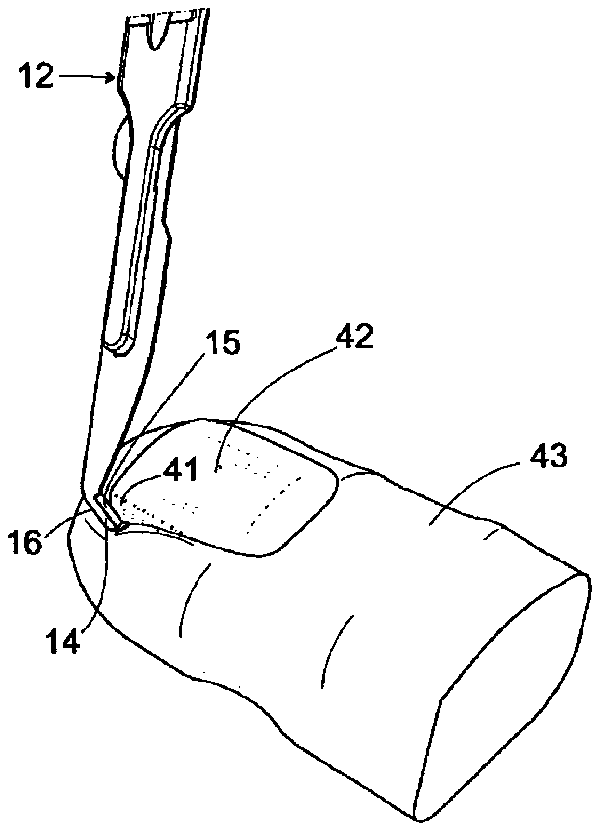
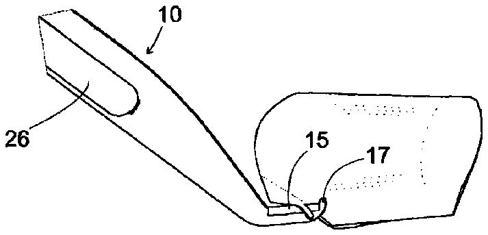
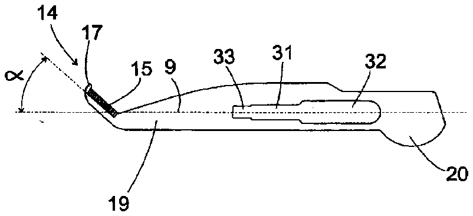
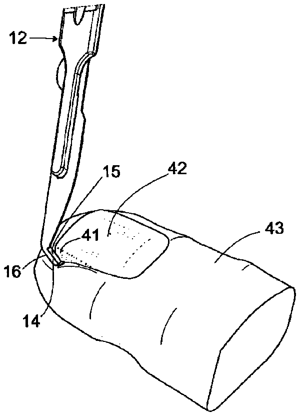
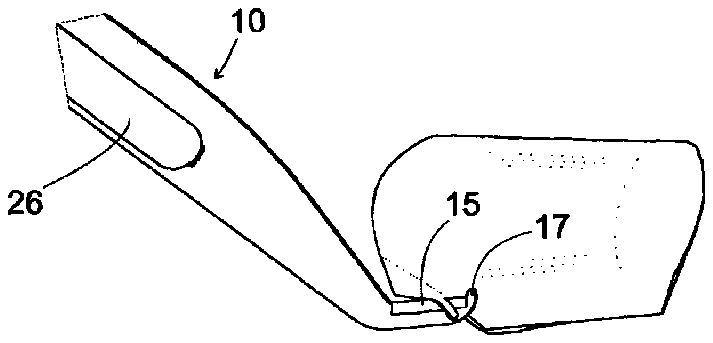
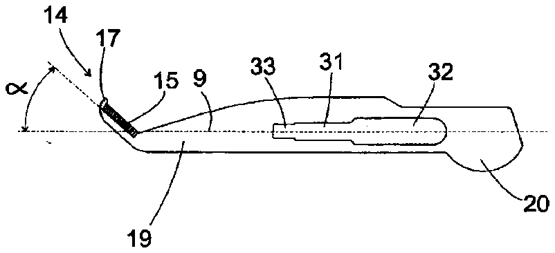

- 3warm water
- 9longitudinal axis
- 10ingrown toenail cutter
- 11cutting component
- 12scalpel component
- 14inner side
- 15cutting edge
- 16outer side
- 17projection
- 19shank
- 22corrugations
- 24on end part 20 will also contact edge
- 25may more preferably be between
- 26protrusion
- 27slots
- 30be
- 31slot
- 32larger slot
- 33smaller outer end slot
- 35or
- 40soft flesh
- 41e safely inserted under ingrown toenail
- 49longitudinal axis
- 50handle
- 51shank
- 52curved end
- 53web plate
- 54cutting edge
- 56or boss
Abstract
An ingrown toenail cutter ( 10, 10 A) including a handle or shank ( 12, 12 A) which at one end has a curved or angled part ( 14, 52 ) which extends away from the handle ( 12, 12 A) and said curved or angled part ( 14, 52 ) has a cutting edge ( 15, 54 ) on an inner side thereof ( 14 A) and there is also provided a terminal abutment ( 17, 56 ) at a free end of the curved or angled part ( 14, 52 ) on the inner side ( 14 A) adjacent to cutting edge ( 15, 54 ) wherein the cutting edge ( 15,54 ) is oriented at an angle of 15° - 60° to a longitudinal axis of the handle or shank.
Description
FIELD OF THE INVENTION
[0001] This invention relates to an ingrown toenail cutter and has particular application to ingrown and incurved toenails. However the invention may also be used for cutting toenails which are not incurved or ingrown.
BACKGROUND OF THE INVENTION
[0002] Onychocryptosis (also known as in “ingrown toenail”) is a common nail ailment and is a very painful condition in which the nail grows so that it cuts into one or both sides of the nail bed which is a layer of tissue under the nail or nail plate which comprises dermis and epidermis. This condition may commonly occur in toenails but can also occur in nails of the hand or other foot nails other than toenails. Hence the term “toenails” as used herein also includes within its scope other nails as described above.
[0003] Conventional methods of treatment of ingrown toenails include removal of the portion of the toenail growing under the skin (i.e. “the ingrown toenail”) to be removed by a podiatrist after administration of a local anesthetic. Once the toe is numb the podiatrist will be able to remove the ingrown toenail and the nail matrix or nail root can be either destroyed with phenol or excusing the nail matrix. After either procedure the nail had to be dressed with antibiotic cream and bandages. It was to be appreciated that this was a very time consuming and painful procedure.
[0004] Surgical techniques for removal of ingrown toenails involved use of a digital block to anaesthetise the nail and use of a tourniquet. Then an incision is made from the base of the nail leaving the nail bed intact and the incision is continued toward the side of the toe in an elliptical sweep to end up under the tip of the nail about 3-4 mm in from the edge. In this procedure it was important that all the skin at the edge of the nail had to be removed. Again this was a time consuming procedure and the toe had to be soaked in warm water 3 times a day until healing occurred in 4-6 weeks.
[0005] Reference also may be made to WO 2009/156788 which describes a toe restraining implement having a toe restraining hook at each end which refers to a curved end having a pointed end which was used for restraining a toe and keeping it stable while performing a treatment on the nail such as filing. However this implement could not be used for treatment of ingrown toenails.
[0006] U.S. Pat. No. 4,936,322 referred to the use of an ingrown toenail part remover which was a hollow cylindrical rod having a tapered end which was shaped to include a soft tissue depressor and a safety knife surface having a cutting edge located within the rod so that it cuts portions of the ingrown toenail as the rod is pulled away. This was a complicated device to manufacture and its use in effective treatment of ingrown toenails was questionable.
[0007] Reference also may be made to U.S. Pat. No. 1,219,626 which referred to a manicuring device having a shank which also includes a bent portion at one end which is provided with a slot which is provided with a cutting edge on a lower part of the slot in use. A fingernail to be trimmed is placed within the slot so as to be trimmed by the cutting edge. This device could not be used for removal of ingrown toenails as it could only be applied to trimming uninfected or normal nails.
OBJECT OF THE INVENTION
[0008] It is therefore an object of the invention to provide an ingrown toenail cutter which is effective in use.
SUMMARY OF THE INVENTION
[0009] The ingrown toenail cutter of the invention includes a handle or shank which at one end has a curved part or angled part which extends away from the handle or shank and said curved or angled part has a cutting edge on an inner side thereof and there is also provided a terminal abutment at a free end of the curved or angled part on the inner side adjacent the cutting edge wherein the cutting edge is oriented at an acute angle of 15°-60° to a longitudinal axis of the handle or shank.
[0010] The handle or shank in one form of the invention may be integral with the curved or angled part so that the cutter is formed in one piece. In another arrangement there may be provided a cutting component which includes the shank and the curved or angled part which is releasably attached to a handle part. The handle part in a desirable form of the invention may correspond or resemble a scalpel handle of conventional type. Thus in this arrangement the scalpel handle may be releasably attached to the cutting component in a similar manner as a scalpel blade is releasably attached to a scalpel blade. Thus more specifically the scalpel handle may include an elongate end extension which may releasably engage in a retention slot in a shank of the cutting component. In this embodiment the end extension may have opposed slots which engage with corresponding edges of the retention slot.
[0011] However the cutting component may be releasably attached to the handle part by any other form of reliable engagement such as by use of a grub screw or other fastener interconnecting aligned apertures in both the handle component and the shank of the cutting component.
[0012] In relation to the acute angle between the cutting edge and the handle or shank this may more preferably be between 25°-40° and most preferably be 30° or 35° or therebetween.
[0013] In one form of the invention the shank of the cutting component is relatively straight and the curved part forms an end extension of the shank whereby the cutting edge may form the acute angle with the longitudinal axis of the shank as described above. Welded or attached to the curved part of the shank may be a web plate which interconnects an adjacent end of the shank and the terminal abutment. A free edge of the web plate may form the cutting edge.
[0014] In another form of the invention the cutting component has the shank in the form of an elongate plate and the angled part is an end extension of the elongate plate whereby the cutting edge forms the acute angle as described above. On the inner side of the end extension is the cutting edge and there is also provided an outer edge in opposed relationship to the inner edge.
[0015] It will be appreciated that the term “inner” having regard to the curved or angled part of the ingrown toenail cutter of the invention means that the inner side is located or defined by possessing the cutting edge and the terminal abutment. In relation to the term “outer” this means an edge or side of the angled or curved part which is substantially in opposed relationship with the inner side or edge.
[0016] In another aspect of the invention there is provided a method of use of the ingrown toenail cutter of the invention which includes the following steps of:
(i) compressing soft flesh of a toe adjacent an ingrown toenail with an outer side of the curved or angled part; (ii) placing the curved or angled part underneath the ingrown toenail wherein the terminal abutment engages an outer surface of the ingrown toenail; and (iii) cutting the ingrown toenail away from an adjacent toenail by using the cutting edge in a reciprocatory or sawing motion while at the same time pulling the curved or angled part away from the ingrown toenail to separate the ingrown toenail from the toenail.
[0020] In yet another aspect of the invention there is provided the cutting component per se.
DESCRIPTION OF THE PREFERRED EMBODIMENT OF THE INVENTION
[0021] Reference may now be made to a preferred embodiment of the invention as shown in the attached drawings wherein:
[0022] FIG. 1 is a side view of one embodiment of the ingrown toenail cutter of the invention;
[0023] FIG. 2 is a perspective view of the ingrown toenail cutter of FIG. 1 ;
[0024] FIG. 3 is a detailed view of the area marked with a circle in phantom shown in FIG. 2 ;
[0025] FIG. 4 is a perspective view showing initial removal of the cutter component from the scalpel component;
[0026] FIG. 5 shows partial removal of the cutter component from the scalpel component;
[0027] FIG. 6 shows complete removal of the cutter component from the scalpel component;
[0028] FIG. 7 is a detailed view of the leading end of the scalpel component;
[0029] FIGS. 8-9 are views showing initial movement of the ingrown toenail cutter shown in FIGS. 1-2 in use in removal of an ingrown toenail wherein the outer side is pushing down on the flesh of the toe adjacent the ingrown toenail.
[0030] FIGS. 10-11 shows subsequent movement of the ingrown toenail cutter with the blade hooked or placed under the ingrown toenail and the end protrusion engaging the ingrown toenail;
[0031] FIG. 12 shows the blade cutting the ingrown toenail in a sawing motion and at the same time pulling back in the direction of the arrow;
[0032] FIG. 13 shows complete removal of the ingrown toenail;
[0033] FIG. 14 shows a perspective view of an alternative type of toenail cutter of the invention;
[0034] FIG. 15 shows a detailed view of an area marked with a circle in phantom shown in FIG. 14 ; and
[0035] FIGS. 16-17 show a plan view of alternative cutting components for use in the invention.
[0036] In FIGS. 1-3 there is provided an ingrown toenail cutter 10 having a cutter component 11 and a scalpel component or scalpel handle 12 . The cutter component has angled part 14 and cutting edge 15 which as shown in FIGS. 16-17 may extend at an acute angle α to the longitudinal axis of the shank 19 of cutting component 11 . In FIGS. 1-3 the longitudinal axis may be defined at least in part by projection 26 described hereinafter and at least in part by slot 23 of scalpel component 12 mentioned hereinafter. The angled part 14 has an inner side 14 A on which the cutting edge 15 and the terminal abutment 17 is located as shown in FIG. 3 and an outer side 16 . The terminal abutment in the form of a small end protrusion 17 and cutting edge 15 is located between protrusion 17 and stem 19 of cutting component 11 which is shown in the form of an elongate narrow plate. The scalpel component has handle part 21 , corrugations 22 and slots 23 on either side of handle part 21 .
[0037] In FIG. 4 is shown initial removal of cutting component 11 from scalpel component 12 and this is caused by pushing up with the thumb (not shown) on end part 20 as shown by the arrow A. Subsequently cutting component 11 can be slidably removed from scalpel component 12 by movement in the direction marked with the arrow B in FIG. 5 . Further continued slidable movement is shown in FIG. 6 which shows cutting component 11 completely separated from scalpel component 12 . When cutting component 11 is completely engaged with scalpel component 12 end part 26 which is in the form of an elongate protrusion has opposed slots 27 and 28 which each engage with a respective edge 29 and 30 of intermediate slot 31 of cutting component 11 . Cutting component 11 also has larger slot 32 which prevents separation of elongate protrusion 26 from slot 31 . There is also provided a smaller outer end slot 33 which functions as a stop to prevent any undesired movement of protrusion 26 away from slot 31 .
[0038] It will be appreciated from the foregoing that re-engagement of cutting component 11 with scalpel component 12 is easily achieved by slots 27 and 28 being re-engaged with adjacent edges 29 and 30 as shown by the arrow C where end part 20 will then also abut corresponding flat part 34 or socket of reduced thickness compared to end portion 26 and handle part 21 . In this position end part 20 will also contact edge 24 of flat part 34 .
[0039] FIGS. 8-13 describe the method of use of ingrown toenail cutter 10 and in FIGS. 8-9 there is shown the first step wherein Outer side 16 of angled part 14 presses down on soft flesh 40 adjacent ingrown toenail 41 which adjoins toenail 42 located on toe 43 .
[0040] In FIGS. 10-11 there is shown angled part 14 hooked or placed under ingrown toenail 41 with small protrusion 17 engaging ingrown toenail 41 to locate or support cutting edge 15 in desired position as shown in FIG. 11 . In FIG. 11 soft flesh 42 has been omitted for convenience.
[0041] In FIG. 12 there is shown cutting edge 15 being moved with a sawing action as shown by double headed arrow D and also with the cutter 10 being pulled back as shown by arrow E to partly remove ingrown toenail 41 . In FIG. 13 there is shown the treated nail 41 with the ingrown toenail 41 completely removed.
[0042] In FIGS. 14-15 there is shown another ingrown toenail cutter 10 A of the invention where use is made of a handle 50 integral or releasably attached to cutting component or shank 51 .
[0043] Shank 51 is formed from rod of round cross section which has a curved part or end 52 integral with shank 51 . There is also provided a web plate 53 located on an inner side 14 A of curved end 52 interconnecting shank 51 and a terminal projection in the form of hemispherical boss 56 shown in FIG. 15 . There is also provided cavities or recesses 55 located on opposed sides of curved end 52 . The purpose of the opposed cavities 55 is to reduce the overall width of curved end 52 and this facilitates the use of ingrown toenail cutter 10 A in a manner similar to nail cutter 10 as shown in FIGS. 8-13 . There is also shown outer side 16 A. Web plate 53 also has cutting edge 54 aligned at an angle α of 30°-35° to longitudinal axis 49 of shank 51 .
[0044] It will also be appreciated that both a left handed version as well as a right handed version of the cutter 10 or 10 A be provided so that whether a left hand side or right hand side of toenail 43 requires removal of an ingrown toenail 41 .
[0045] This is shown in FIGS. 16-17 wherein FIG. 16 illustrates a cutting component 11 A wherein cutting edge 15 extends at angle α to longitudinal axis 9 of shank 19 of cutting component 11 A and wherein angled part 14 extends to the right of longitudinal axis 9 and in cutting component 11 B wherein angled component 14 extends to the left of longitudinal axis 9 at angle α to longitudinal axis 9 . In either case angle α can be 30° or 35° or any value between these angles. The right hand component 11 A can be used for cutting left hand corners of the user's toenails and the left hand component 11 B would be suitable for cutting a left hand corner of the user's toenails.
[0046] It will be appreciated from the foregoing that the ingrown toenail cutter of the invention is of extremely simple construction and very effective in use. The use of a conventional scalpel handle is also extremely advantageous and avoids manufacture of an integral handle. The ingrown toenail cutter of the invention is also very simple to use in practice as shown in FIGS. 8-13 wherein the outer side 16 is pressed against the soft flesh 40 adjacent ingrown toenail 41 to allow the cutting edge 15 to be inserted under ingrown toenail 41 and levered into desired position for cutting ingrown toenail 41 with projection 17 permitting cutting edge 15 to be safely inserted under ingrown toenail 41 and located in an appropriate position as shown in FIG. 11 to enable cutting edge 15 to be drawn back and forth or in a sawing or reciprocatory fashion to cut ingrown toenail 41 as shown in FIGS. 12-13 .
[0047] From the above, it will further be appreciated that the feature of projection 17 is important because it makes the ingrown toenail cutter of the invention extremely safe to use because projection 17 or boss 56 will ensure that the cutting edge 15 will not cut or remove tissue if the ingrown toenail cutter 10 or 10 A is used in the manner described above. This also means that the ingrown toenail cutter 10 can be used by any member of the public or unskilled person without the requirement of a podiatrist. This is achieved by projection 17 or boss 56 ensuring that the cutting edge 15 to be safely inserted under ingrown toenail 41 and located in desired position as described above.
[0048] It is emphasized that prior to use the ingrown toenail cutter of the invention should be immersed in a solution of warm water which optionally can contain wetting agents and/or disinfectants.